潘SIR中文教室編撰
很多同學看見圖畫時，雖然腦海裡有很多想法，但下筆時卻容易寫得雜亂無章，或者像「流水帳」一樣沉悶。要寫出一篇結構完整、內容豐富的故事，我們必須掌握「七步成文法」。只要按照這七個步驟構思，就能輕鬆寫出好文章！
| 步驟 | 寫作技巧及重點 | 應用示例（以「操場跌倒」為例） |
|---|---|---|
| 1. 中心句 (時+人+地+事) |
文章開首，清晰交代故事背景。公式：何時 + 何人 + 何地 + 何事。 | 星期一的小息（時），同學們（人）在操場上（地）自由活動（事）。 |
| 2. 人物/地方描述 | 仔細觀察圖片背景。運用「有……有……還有……」的句式，生動描繪畫面細節，增加真實感。 | 操場上十分熱鬧，有的同學在跳繩，有的在追逐，還有同學在吃小食。 |
| 3. 發生問題 | 故事的轉折點！主角遭遇了什麼意外？多用轉折詞如「突然」、「忽然」、「想不到」帶起緊張氣氛。 | 突然，正在奔跑的明仔不小心踩到了一灘水，整個人向前摔倒在地上。 |
| 4. 人物對話 | 加入旁人或主角的對話。運用「看見」、「連忙問」、「哭著說」等詞語，讓人物活起來。 | 值日生小華看見了，連忙跑過去關心地問：「你受傷了嗎？」明仔痛得哭著答：「我的膝蓋流血了！」 |
| 5. 解決方法 | 問題發生後，大家如何應對？可用「建議」、「決定」、「連忙」來展現解決過程。 | 小華建議明仔先不要亂動，並連忙扶他到醫療室找校工包紮傷口。 |
| 6. 教訓/感受/道理 | 文章的結尾昇華。主角學到了什麼？心情如何？可用「學到」、「明白到」、「感到」。 | 明仔感到很後悔，他明白到在雨後的操場奔跑是很危險的，學到了以後要注意安全。 |
| 7. 象聲詞 | 這是加分項技巧！在適當的位置加入聲音的描寫，令讀者如臨其境。 | （加在步驟3）突然，「砰」的一聲巨響，明仔摔倒在地。 （加在步驟4）明仔痛得「哇哇」大哭。 |
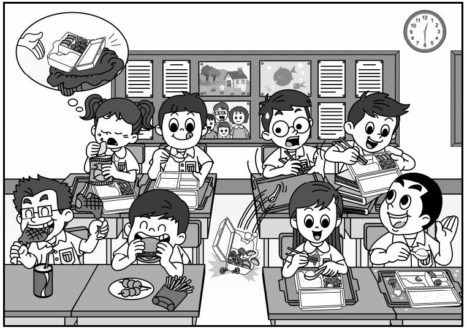
我們來看看如何將剛才學到的「七步曲」應用到這幅圖片中，寫成一篇條理分明的故事大綱：
要文章寫得生動，豐富的詞彙必不可少。寫作時，不妨從以下「百寶箱」中挑選合適的詞語替換簡單的字詞。
這部分為大家準備了 17 個常見的看圖寫作情境。請同學根據圖片描述的提示，運用「七步成文法」在筆記簿上寫下你的故事大綱，然後擴寫成一篇完整的故事。
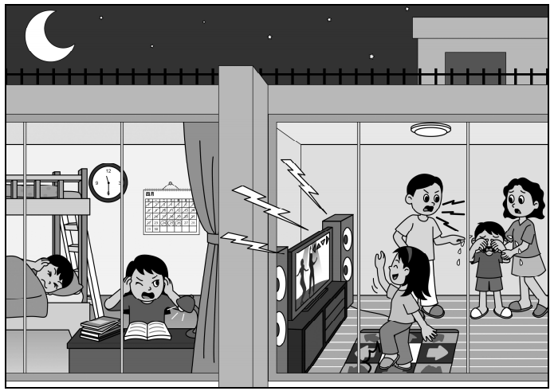
寫作提示：注意時空對比，運用「震耳欲聾」形容聲音，帶出顧及別人的道理。
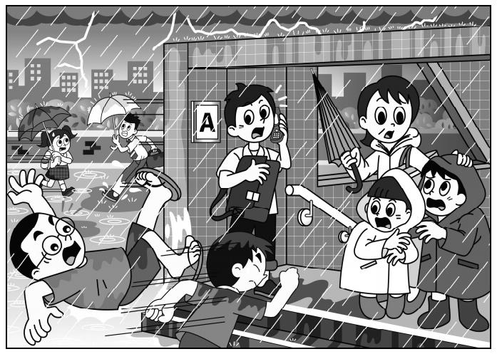
寫作提示：象聲詞可選「嘩啦嘩啦」（雨聲）、「哎呀」（跌倒聲）。道理可寫「欲速則不達」或注意安全。
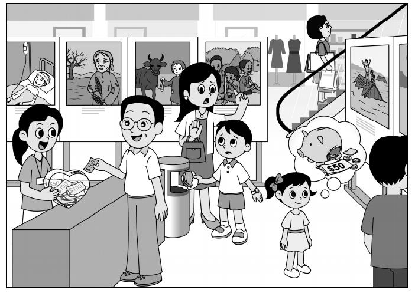
寫作提示：這題著重內心掙扎。可描寫男孩「惻隱之心」，最終決定放棄買零食，幫助更有需要的人。
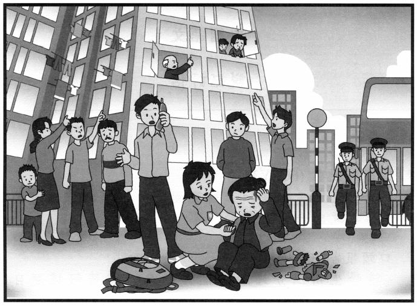
寫作提示：運用「千鈞一髮」形容危急，教訓是高空擲物嚴重危害生命，缺乏公德心。
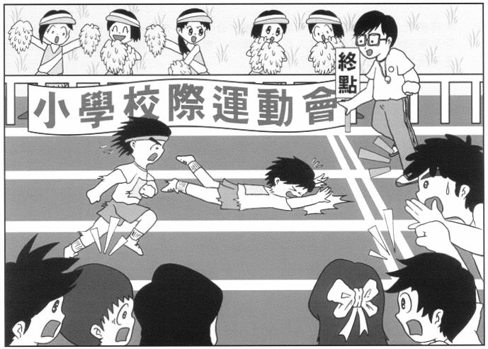
寫作提示：除了描寫跌倒的痛楚，可加入同學展現「體育精神」，上前扶起他的情節。
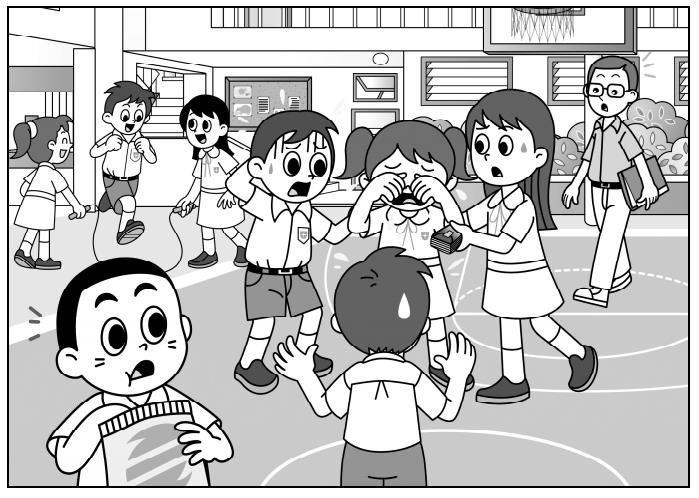
寫作提示：對話是關鍵！老師會如何調停？男生要誠心道歉，女孩選擇原諒。
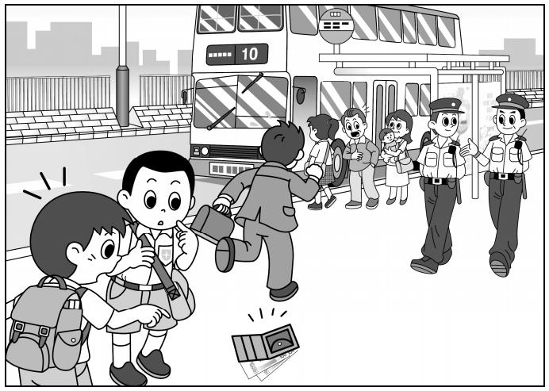
寫作提示：這題考驗主角的品格。學生應發揮「路不拾遺」的精神，大聲呼喚失主或交給附近的警察。
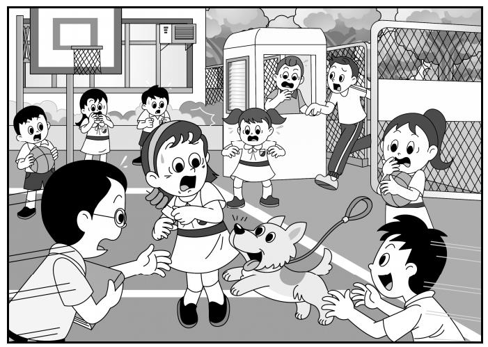
寫作提示：象聲詞「汪汪」，描寫同學「驚惶失措」的神態，解決方法可能是保安叔叔幫忙捉住小狗。
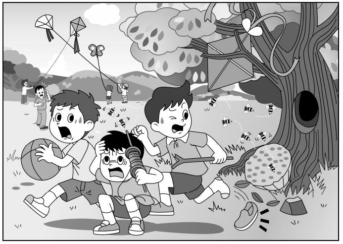
寫作提示：象聲詞「嗡嗡嗡」。道理：不可貪玩破壞自然，要注意四周環境安全。
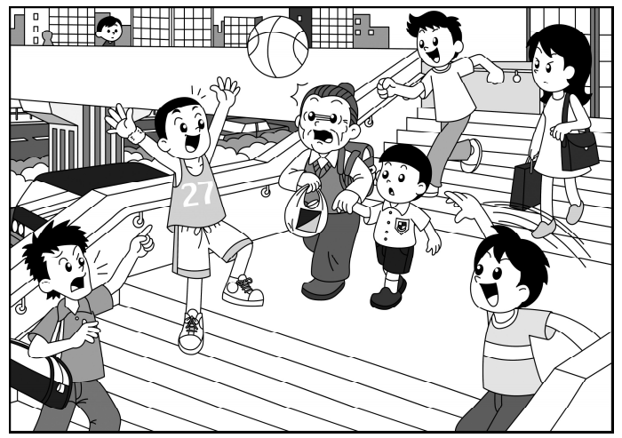
寫作提示：教訓：不應在狹窄或不適合的地方進行球類活動，以免傷及無辜，危害公眾安全。
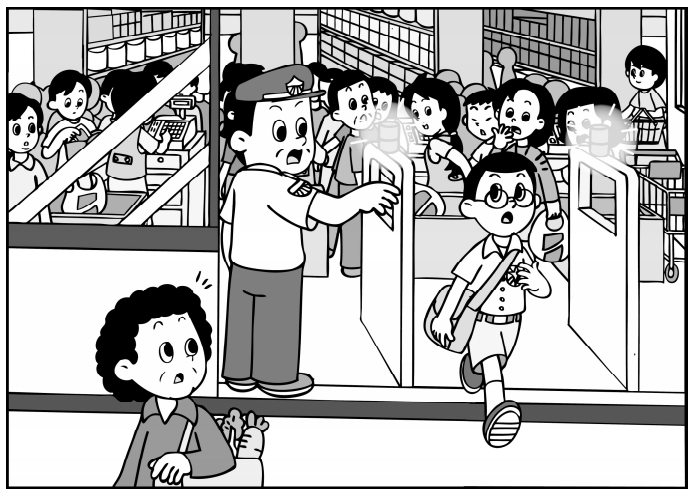
寫作提示：問題解決：保安搜查後發現是誤會（如書包有磁鐵或商品未消磁）。感受：雖然委屈，但明白要冷靜配合調查。
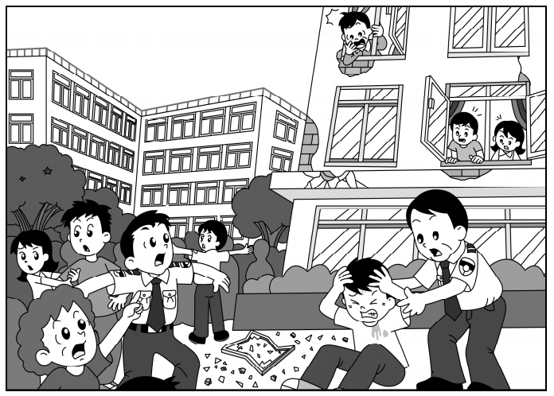
寫作提示：描寫危急存亡之際，發揮守望相助的精神，遵守逃生指引。
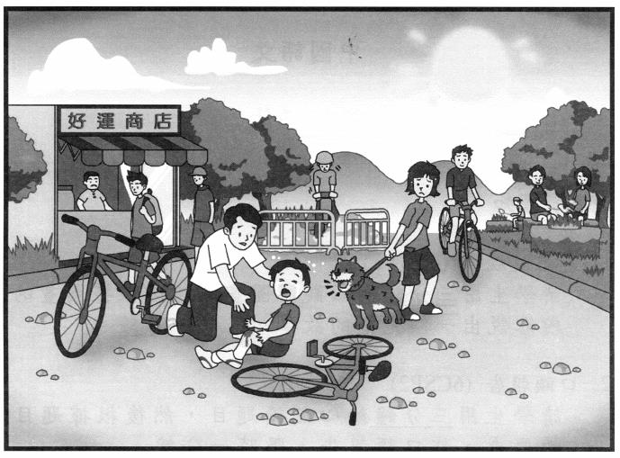
寫作提示：可以加上「吱——」的煞車聲。途人伸出援手，體現社區互助的溫暖。
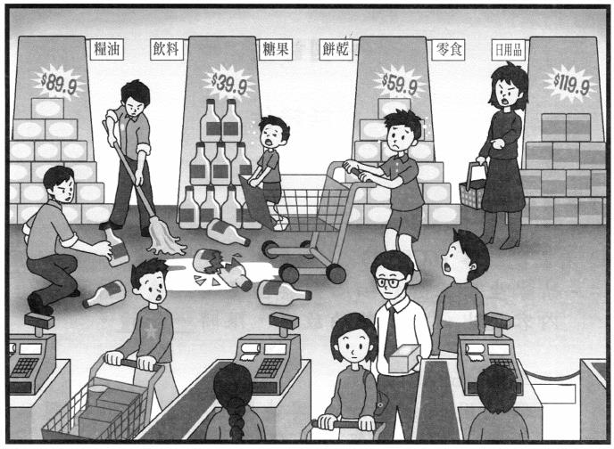
寫作提示：象聲詞「哐啷」（玻璃碎裂聲）。道理：公眾場所不可亂跑亂撞，必須為自己的行為負責（如賠償損失）。
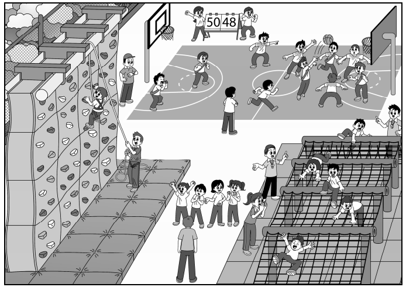
寫作提示：這是一篇以「正向心態」為主的文章。問題可以是「中途想放棄」，解決方法是「同學鼓勵」，感受是「克服恐懼的喜悅」。
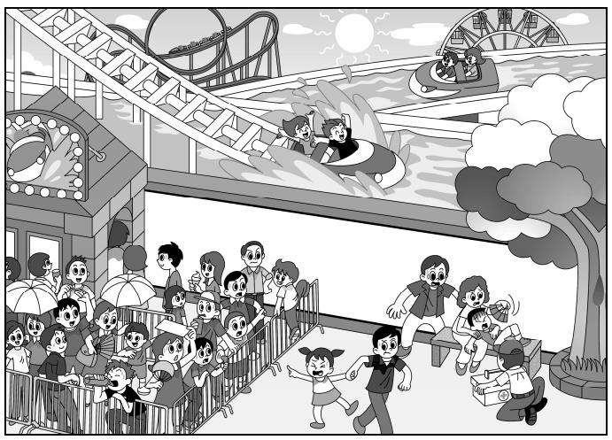
寫作提示：描寫天氣炎熱「大汗淋漓」。道理：戶外活動必須時刻補充水分，量力而為。
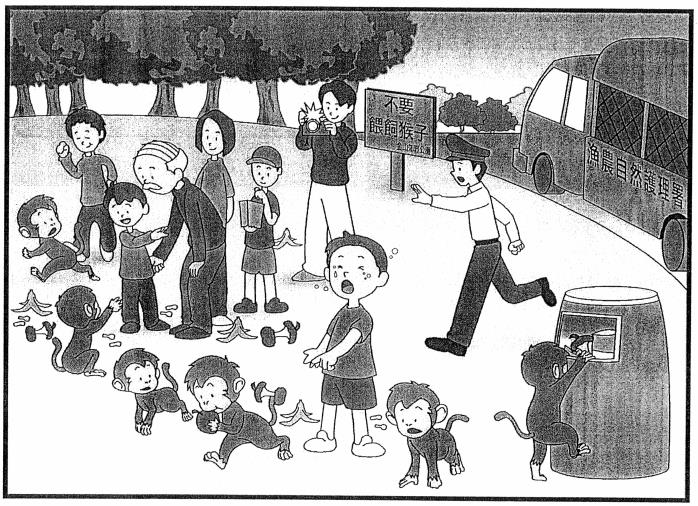
寫作提示：教訓：必須遵守郊野公園的規則，不應餵飼野生動物，以免引起動物襲擊，保護生態也保護自己。